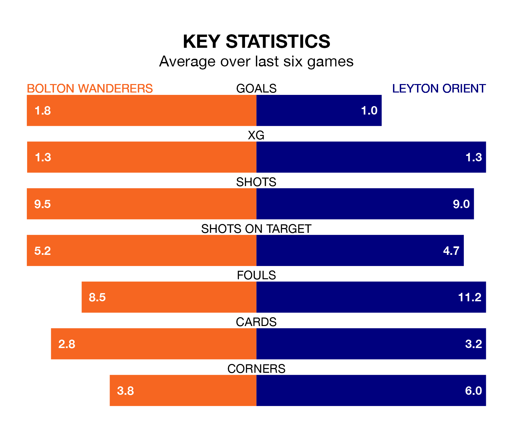

Bolton Wanderers are heavy favourites to keep all three points at home in Saturday's kick-off against Leyton Orient.
Bolton, who sit fifth in EFL League One with 20 games played, are priced at 1.5 to seal victory at the University of Bolton Stadium.
Sitting 10 places and 14 points behind them in the table, Orient are 5.1 to win with *Betting Company*, while the draw is at 3.9.
With 38 goals in 20 games so far this season, Bolton are the league's joint-second-highest scorers with 1.9 goals per game. And they are conceding fewer than average, letting in 22 goals at a rate of 1.1 per game.
Orient, meanwhile, are below average scorers, with 1.0 goal per game, compared to a league average of 1.3. They have conceded 1.3 goals per game.
Wanderers are in mixed form in EFL League One, with three wins and a draw from their last six games.
With a win and two draws over that period, the away side's form is worse – they have taken five points from 18, compared to the hosts' 10.
With Nathan Baxter between the sticks, Bolton can rely on one of the league's safest pair of hands. He has kept eight clean sheets in his 20 appearances this season in EFL League One.
In Orient's net, Samuel Howes has one clean sheet in three games. He has conceded a goal every 45 minutes, twice as often as the 90 minutes between goals for Baxter.
Bolton's last match was on December 16, a 2-1 loss against Bristol Rovers, with Eoin Toal getting the goal for Bolton.
Orient beat Cheltenham Town 2-1 last time out, also on December 16, with Ethan Stuart William Galbraith and Shaqai Forde on the scoresheet.
